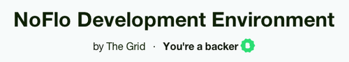
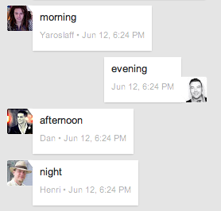
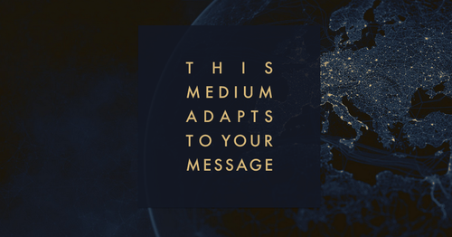
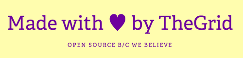
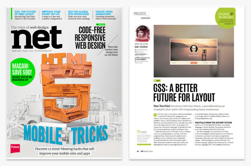

The Grid
I’m finally able to share that I recently joined The Grid!
I feel proud to be a part of the team behind GSS, NoFlo, FlowHub, and more.
Backing the Future

I first encountered The Grid last year when I backed the NoFlo Development Environment on Kickstarter, and again a few months ago after working with Auto Layout on iOS.
GSS brings the constraint-solving Autolayout in iOS to the browser: http://t.co/DxUDiuvnYj - center any element in another with a one-liner
— Addy Osmani (@addyosmani) March 7, 2014
At that time I was frustrated with web development and had sought refuge in producing native applications. Underwhelmed by the current landscape, I wondered if I’d ever go back.
I kept dreaming of a world I thought I’d never see. And then, one day… I got in. - Tron Legacy
The Grid changed all of that. Here are just a few reasons why I’m excited about what we’re doing:
Remote

We’re a distributed team comprised of people across 7 countries. I love that our culture supports working remotely where geography isn’t a barrier to working with great people. Everyone I’ve come into contact with has been incredibly talented and humble.
Style & Substance

Design is given the attention it deserves. In conjunction with the innovative technology required to make them a reality, beautiful aesthetics are at the forefront of everything we do.
Open Source

Just take a look at one or two of our organizations on GitHub and it’s easy to see that we believe in open source. I’m a big proponent for writing software in an open source environment that encourages collaboration and produces more modular, testable code with better documentation.
A Digital Frontier

Years of development have been invested into projects like these to facilitate building our platform, which launches soon.
I’m continually blown away by what we’re doing and I can’t wait for everyone else to experience it too.